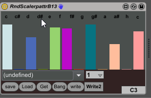

hello AXOs!
May i remind you that i won the first challenge?
my new challenge is;-)
a scaler/quantizer with weighted random..
12 faders for the scale
and x faders for octaves
I am thinking about this for years , but could not find a solution, because its really complex/complicated.....
To take this to another level ...did you ever heard of the next note rule?
if note=d then next note50% d 25% f 25 a
if note=a Then next 25% a 75%f
and so on ....
but also for length
the longer the previous note ,the shorter the following note...
etc
I would be very happy to see diffrent approaches to this theme...
the winner gets 10% rabbat from me for the next AXO s/he buys, but only if there are >= 5 participants or really
brilliant
I will try to make a poll ....
deal?
and please forgive me my denglisch as je blieft.....
here an picture of an max for live version wich never really worked from the math point of view...
but with presets......sigh